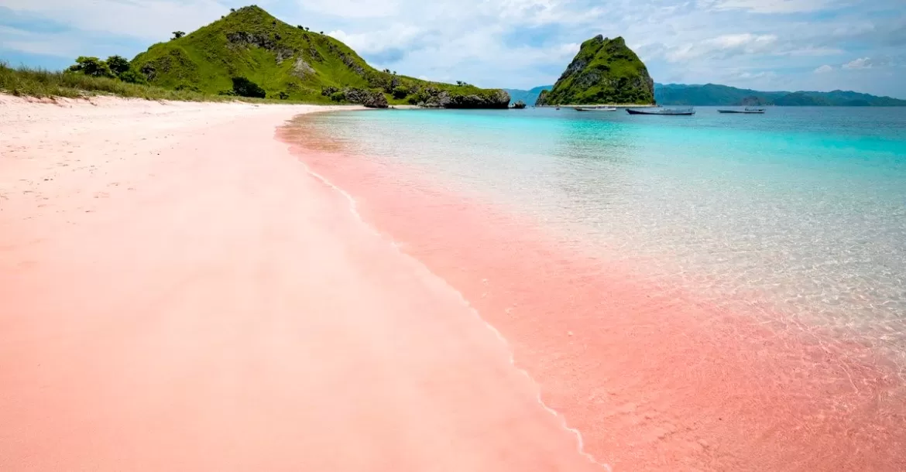
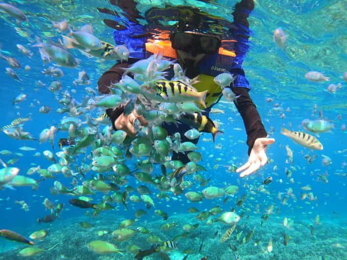
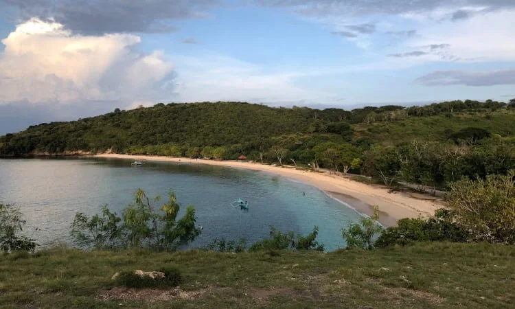

Sejarah dan Keunikan Pantai Pink
Pantai Pink terletak di Desa Sekaroh, Kecamatan Jerowaru, Kabupaten Lombok Timur, Nusa Tenggara Barat. Pantai ini dikenal karena pasirnya yang berwarna pink, yang sangat langka dan eksotis. Warna pink pada pasir berasal dari pecahan terumbu karang merah yang bercampur dengan pasir putih. Fenomena ini membuat Pantai Pink menjadi salah satu dari hanya beberapa pantai di dunia yang memiliki pasir berwarna pink.
Keindahan pasir berwarna pink yang memukau di Pantai Pink.
Keindahan Alam yang Memesona
Pantai Pink memiliki pemandangan yang sangat memukau dengan perpaduan pasir pink, air laut biru jernih, dan bukit-bukit hijau di sekelilingnya. Pantai ini masih terjaga keasriannya dan jauh dari hiruk-pikuk keramaian, sehingga cocok untuk wisatawan yang ingin menikmati suasana pantai yang tenang dan alami.
Snorkeling dan Menyelam
Pantai Pink juga menawarkan pengalaman snorkeling dan menyelam yang luar biasa. Terumbu karang di sekitar pantai masih terjaga dengan baik, dihuni oleh berbagai jenis ikan tropis yang berwarna-warni. Airnya yang jernih membuat pemandangan bawah laut terlihat sangat jelas.
Wisatawan menikmati snorkeling di perairan Pantai Pink.
Pemandangan Bukit di Sekitar Pantai
Di sekitar Pantai Pink terdapat bukit-bukit hijau yang dapat dinaiki oleh para pengunjung. Dari atas bukit, Anda bisa menikmati pemandangan Pantai Pink secara keseluruhan, dengan panorama laut lepas yang sangat indah. Waktu terbaik untuk mendaki bukit adalah saat pagi atau sore hari untuk menikmati matahari terbit atau terbenam.
Pemandangan dari atas bukit yang menakjubkan di Pantai Pink.
Lokasi dan Akses Menuju Pantai Pink
Untuk mencapai Pantai Pink, Anda bisa berangkat dari Kota Mataram dengan perjalanan darat sekitar 2,5 jam menuju Pelabuhan Tanjung Luar. Dari pelabuhan, Anda bisa menyewa perahu untuk menuju Pantai Pink dengan perjalanan laut sekitar 30 menit. Perjalanan menuju Pantai Pink menawarkan pemandangan yang menakjubkan, termasuk pulau-pulau kecil di sekitarnya.
Fasilitas di Pantai Pink
Meskipun Pantai Pink masih tergolong alami, terdapat beberapa fasilitas sederhana untuk kenyamanan pengunjung, seperti:
- Tempat parkir untuk kendaraan.
- Warung makan yang menyediakan makanan laut segar.
- Penyewaan peralatan snorkeling.
- Gazebo untuk bersantai di tepi pantai.
Tips Berkunjung ke Pantai Pink
Berikut beberapa tips untuk menikmati liburan di Pantai Pink:
- Bawalah perlengkapan snorkeling jika ingin menjelajahi keindahan bawah laut.
- Gunakan tabir surya untuk melindungi kulit dari sengatan matahari.
- Datanglah pada pagi hari untuk menghindari teriknya matahari dan menikmati suasana pantai yang lebih sepi.
- Jangan lupa membawa bekal makanan dan minuman karena fasilitas di pantai masih terbatas.
- Selalu jaga kebersihan dan kelestarian pantai dengan tidak membuang sampah sembarangan.